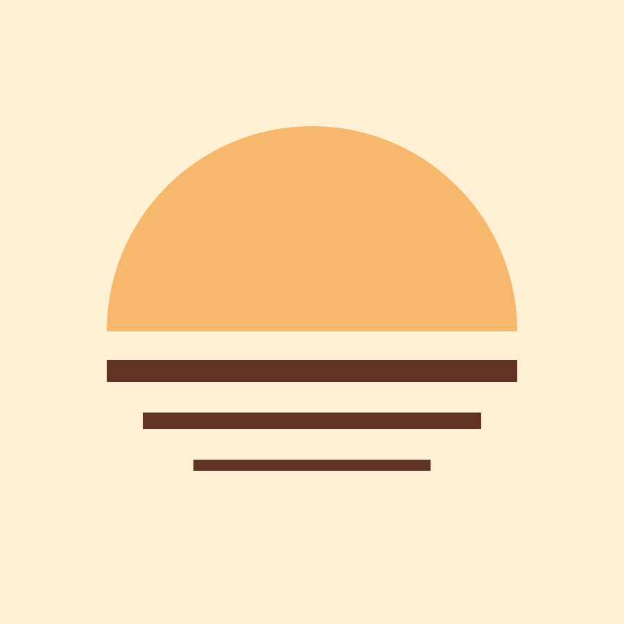
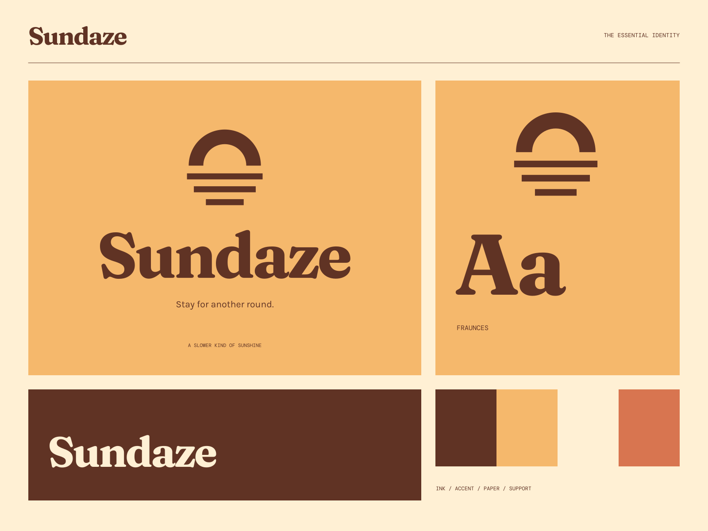

01
Your usual, made well
A familiar pleasure with room for a new favorite.
COFFEE / SODA / THE SLOW GOOD STUFF
Stay for another round. A sunny little ritual.

A coherent little world
A sunny little ritual. Stay for another round.
01
A familiar pleasure with room for a new favorite.
02
Good ingredients, unhurried care, and warm company.
03
A neighborhood table for mornings that become afternoons.

The point of view
Warm screenprint sunsets, scalloped café labels, striped cups, and deeply rounded vintage type. A coherent coffee-and-soda world with real packaging personality.